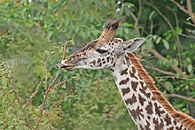

2. Behavior and ecology of giraffes
- 4.1 Habitat and feeding
- 4.2 Social life
- 4.3 Reproduction and parental care
- 4.4 Necking
- 4.5 Mortality and health
Habitat and feeding

A Masai giraffe extending its tongue to feed, in Tanzania. Its tongue, lips and palate are tough enough to deal with sharp thorns in trees.
Giraffes usually inhabit savannahs and open woodlands. They prefer Acacieae, Commiphora, Combretum and open Terminalia woodlands over denser environments like Brachystegia woodlands.[41]:322 The Angolan giraffe can be found in desert environments.[84] Giraffes browse on the twigs of trees, preferring trees of the subfamily Acacieae and the genera Commiphora and Terminalia,[4] which are important sources of calcium and protein to sustain the giraffe's growth rate.[12] They also feed on shrubs, grass and fruit.[41]:324 A giraffe eats around 34 kg (75 lb) of foliage daily.[46] When stressed, giraffes may chew the bark off branches. Although herbivorous, the giraffe has been known to visit carcasses and lick dried meat off bones.[41]:325
During the wet season, food is abundant and giraffes are more spread out, while during the dry season, they gather around the remaining evergreen trees and bushes.[4] Mothers tend to feed in open areas, presumably to make it easier to detect predators, although this may reduce their feeding efficiency.[71] As a ruminant, the giraffe first chews its food, then swallows it for processing and then visibly passes the half-digested cud up the neck and back into the mouth to chew again.[53]:78–79 It is common for a giraffe to salivate while feeding.[54]:27 The giraffe requires less food than many other herbivores because the foliage it eats has more concentrated nutrients and it has a more efficient digestive system.[4] The animal's faeces come in the form of small pellets.[7] When it has access to water, a giraffe drinks at intervals no longer than three days.[46]
Giraffes have a great effect on the trees that they feed on, delaying the growth of young trees for some years and giving "waistlines" to trees that are too tall.[46] Feeding is at its highest during the first and last hours of daytime. Between these hours, giraffes mostly stand and ruminate. Rumination is the dominant activity during the night, when it is mostly done lying down.[46]
Social Life
Giraffes are usually found in groups. Traditionally, the composition of these groups has been described as open and ever-changing.[85] Giraffes were thought to have few social bonds and for research purposes, a "group" has been defined as "a collection of individuals that are less than a kilometre apart and moving in the same general direction."[86] More recent studies have found that giraffes do have long-term social associations and may form groups or pairs based on kinship, sex or other factors. These groups may regularly associate with one another in larger communities or sub-communities within a fission–fusion society.[87][88][89] The number of giraffes in a group can range up to 44 individuals.[89]
Giraffe groups tend to be sex-segregated[89] although mixed-sex groups made of adult females and young males are known to occur. Particularity stable giraffe groups are those made of mothers and their young,[86] which can last weeks or months.[90] Social cohesion in these groups is maintained by the bonds formed between calves.[41]:330[86] Female association appears to be based on space-use and individuals may be matrilineally related.[89] In general, females are more selective than males in who they associate with in regards to individuals of the same sex.[88] Young males also form groups and will engage in playfights. However, as they get older males become more solitary but may also associate in pairs or with female groups.[89][90] Giraffes are not territorial,[7] but they have home ranges.[46] Male giraffes occasionally wander far from areas that they normally frequent.[41]:329
Although generally quiet and non-vocal, giraffes have been heard to communicate using various sounds. During courtship, males emit loud coughs.[46] Females call their young by bellowing. Calves will emit snorts, bleats, mooing and mewing sounds. Giraffes also snore, hiss, moan, grunt and make flute-like sounds,[46][91] and possibly communicate over long distances using infrasound[92]—though this is disputed.[91] During nighttime, giraffes appear to hum to each other above the infrasound range for purposes which are unclear.[91]
Reproduction and parental care
Reproduction in giraffes is broadly polygamous: a few older males mate with the fertile females. Male giraffes assess female fertility by tasting the female's urine to detect oestrus, in a multi-step process known as the flehmen response.[86][90] Males prefer young adult females over juveniles and older adults.[86] Once an oestrous female is detected, the male will attempt to court her. When courting, dominant males will keep subordinate ones at bay.[90] A courting male may lick a female's tail, rest his head and neck on her body or nudge her with his horns. During copulation, the male stands on his hind legs with his head held up and his front legs resting on the female's sides.[46]
Giraffe gestation lasts 400–460 days, after which a single calf is normally born, although twins occur on rare occasions.[93] The mother gives birth standing up. The calf emerges head and front legs first, having broken through the fetal membranes, and falls to the ground, severing the umbilical cord.[7] The mother then grooms the newborn and helps it stand up.[54]:40 A newborn giraffe is 1.7–2 m (5.6–6.6 ft) tall.[48][49][50] Within a few hours of birth, the calf can run around and is almost indistinguishable from a one-week-old. However, for the first 1–3 weeks, it spends most of its time hiding;[94] its coat pattern providing camouflage. The ossicones, which have lain flat while it was in the womb, become erect within a few days.[46]
Mothers with calves will gather in nursery herds, moving or browsing together. Mothers in such a group may sometimes leave their calves with one female while they forage and drink elsewhere. This is known as a "calving pool".[94] Adult males play almost no role in raising the young,[41]:337 although they appear to have friendly interactions.[86] Calves are at risk of predation, and a mother giraffe will stand over her calf and kick at an approaching predator.[46] Females watching calving pools will only alert their own young if they detect a disturbance, although the others will take notice and follow.[94]
The length time in which offspring stay with their mother varies, though it can last until the female's next calving.[94] Likewise, calves may suckle for only a month[41]:335 or as long as a year.[46][90] Females become sexually mature when they are four years old, while males become mature at four or five years. Spermatogenesis in male giraffes begins at three to four years of age.[95] Males must wait until they are at least seven years old to gain the opportunity to mate.[46][54]:40

Necking
Male giraffes use their necks as weapons in combat, a behaviour known as "necking". Necking is used to establish dominance and males that win necking bouts have greater reproductive success.[16] This behaviour occurs at low or high intensity. In low intensity necking, the combatants rub and lean against each other. The male that can hold itself more erect wins the bout. In high intensity necking, the combatants will spread their front legs and swing their necks at each other, attempting to land blows with their ossicones. The contestants will try to dodge each other's blows and then get ready to counter. The power of a blow depends on the weight of the skull and the arc of the swing.[46] A necking duel can last more than half an hour, depending on how well matched the combatants are.[41]:331 Although most fights do not lead to serious injury, there have been records of broken jaws, broken necks, and even deaths.[16]
After a duel, it is common for two male giraffes to caress and court each other. Such interactions between males have been found to be more frequent than heterosexual coupling.[96] In one study, up to 94 percent of observed mounting incidents took place between males. The proportion of same-sex activities varied from 30–75 percent. Only one percent of same-sex mounting incidents occurred between females.[97]
Mortality and Health
Giraffes have high adult survival probability,[98] and an unusually long lifespan compared to other ruminants,[99] up to 25 years in the wild.[47] Because of their size, eyesight and powerful kicks, adult giraffes are usually not subject to predation,[46] aside from lions.[100] Giraffes are the most common prey for the big cats in Kruger National Park.[101] Nile crocodiles can also be a threat to giraffes when they bend down to drink.[54] Calves are much more vulnerable than adults, and are additionally preyed on by leopards, spotted hyenas and wild dogs.[20] A quarter to a half of giraffe calves reach adulthood.[98][102] Calf survival varies according to the season of birth, with calves born during the dry season having higher survival rates.[103] The local, seasonal presence of large herds of migratory wildebeests and zebras reduces predation pressure on giraffe calves and increases their survival probability.[104]
Some parasites feed on giraffes. They are often hosts for ticks, especially in the area around the genitals, which has thinner skin than other areas.[7] Tick species that commonly feed on giraffes are those of genera Hyalomma, Amblyomma and Rhipicephalus. Giraffes may rely on red-billed and yellow-billed oxpeckers to clean them of ticks and alert them to danger. Giraffes host numerous species of internal parasite and are susceptible to various diseases. They were victims of the (now eradicated) viral illness rinderpest.[7] Giraffes can also suffer from a skin disorder, which comes in the form of wrinkles, lesions or raw fissures. It appears to be caused by a nematode and may be further effected by fungal infections. As much as 79% of giraffes show signs of the disease in Ruaha National Park.[105][106][107]